大通り会場

大通り会場の歴史
さっぽろ雪祭りの第1回目として大通り公園7丁目で始まる。当時の大通り公園は市民の雪捨て場として 使われており、その雪を利用し市内の学生が6基の雪像を作成したことが雪祭の起源となる。
上記左上の写真が第1回目(1950年)となり、右上写真が第70回目(2020年)の大通り会場の様子。
雪祭りが大通り会場のみで行われていたのが1950年～1964年の14年間で、以降他会場にも増設。
本ページでは、大通り会場のみで行われてきた14年間分の遷移について記載。
1950年に始まった第1回では来場者は5万人程であったが、回数を重ねる毎に知名度が上がり、 現在では外国人観光客も多く全国でも有数のお祭りとなっている。
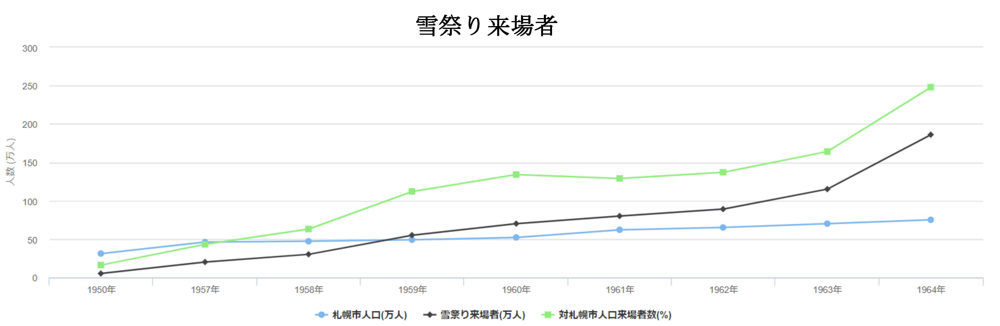上記のグラフを見ると知名度の上がり方が良く分かる。第1回では札幌人口36万人、雪祭り来場者数が5万人であり、来場者対札幌市人口比率では16%に留まっている。グラフに記載されている最終年では札幌市人口が75万人に対して来場者数は186万人。対比では248%と市外からも多くの来場者がいることが分かる。
尚、過去最高の来場者数を記録したのは第22回(1971年)の405万人。1972年にカウント方式が変更され、以降の最多は第69回(2019年)の273万人となっている。
1950年 - 1964年
以下、各年の開催時期、来場者数、代表雪像、備考を記載
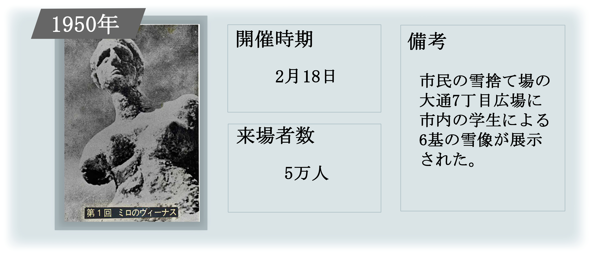 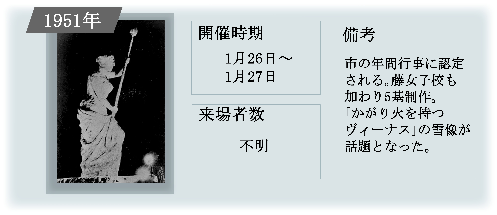 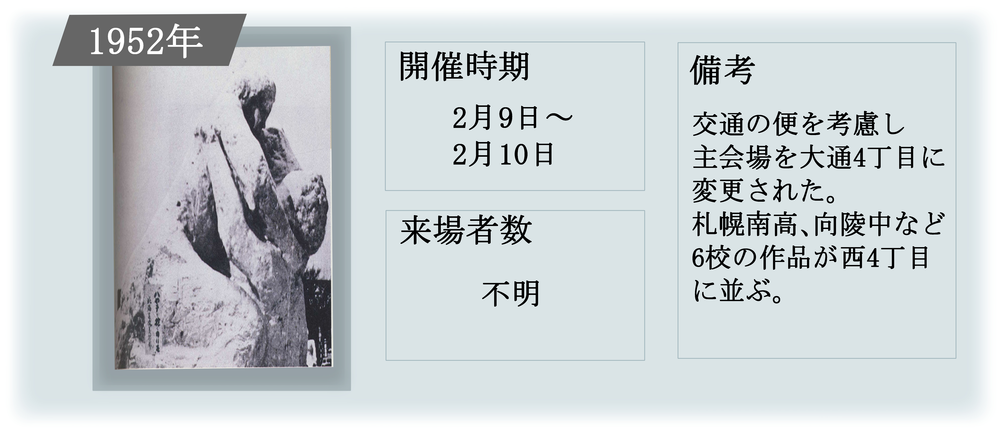 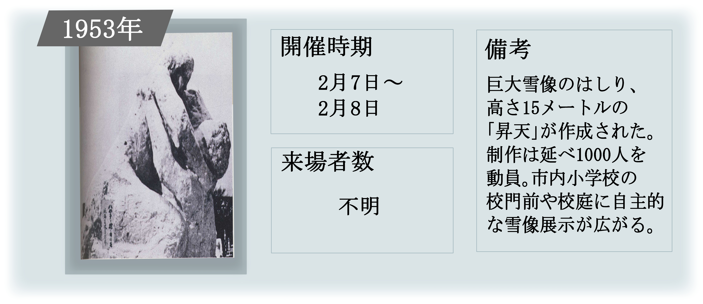 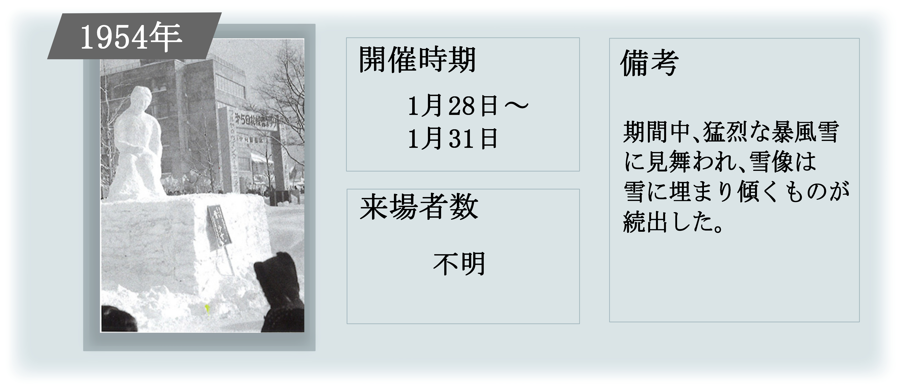 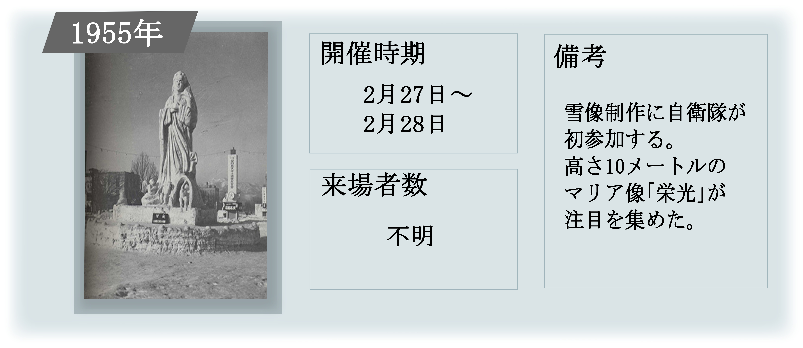 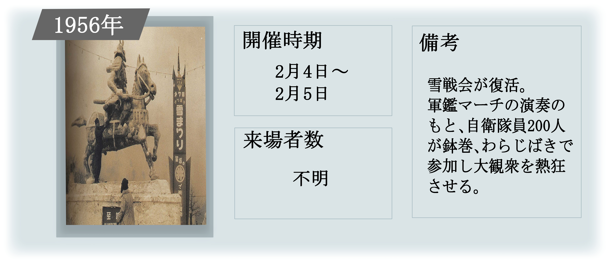 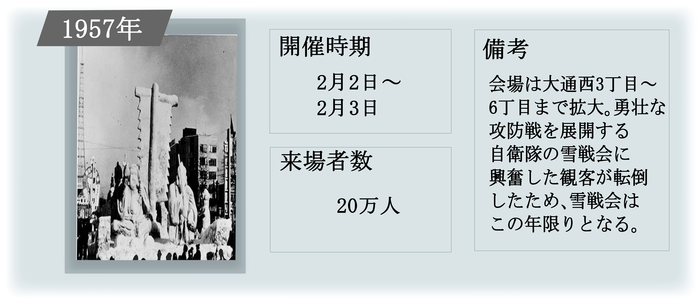 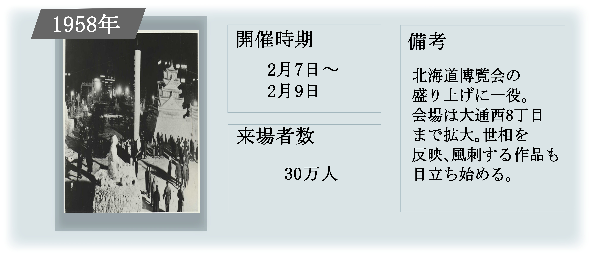 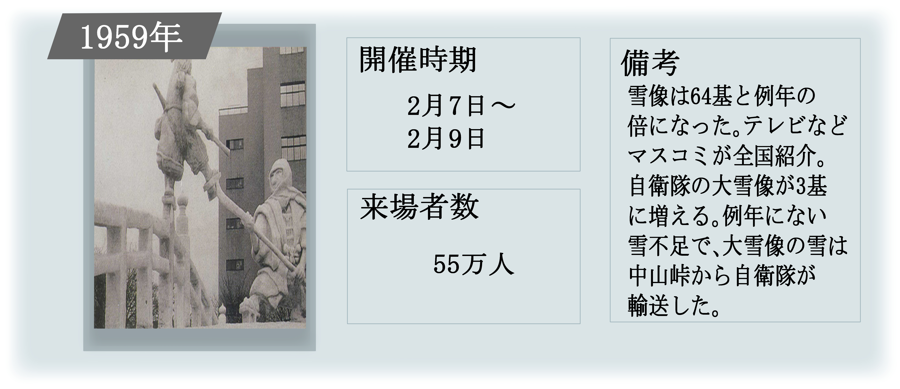 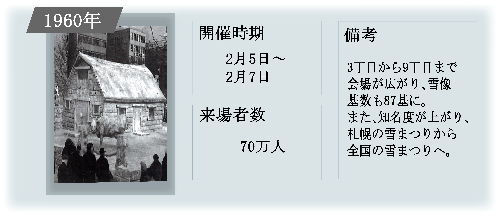 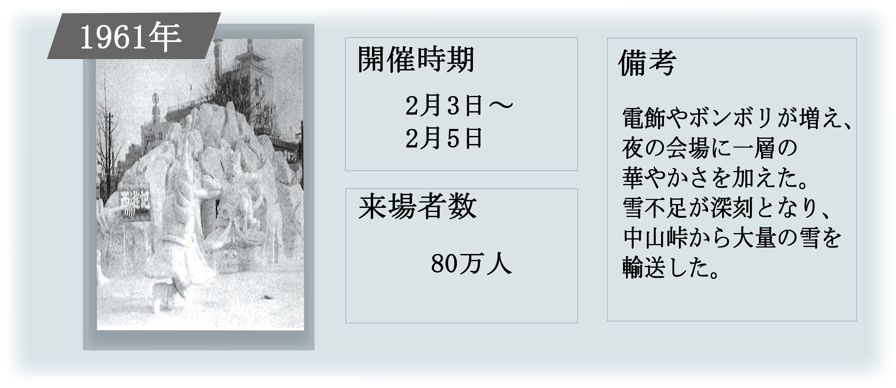 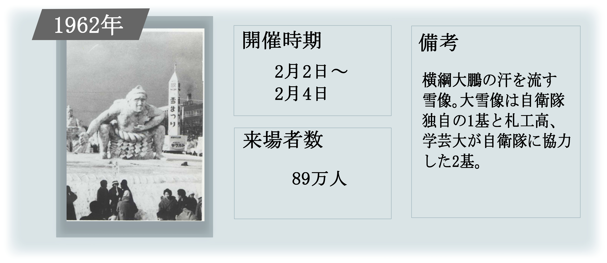 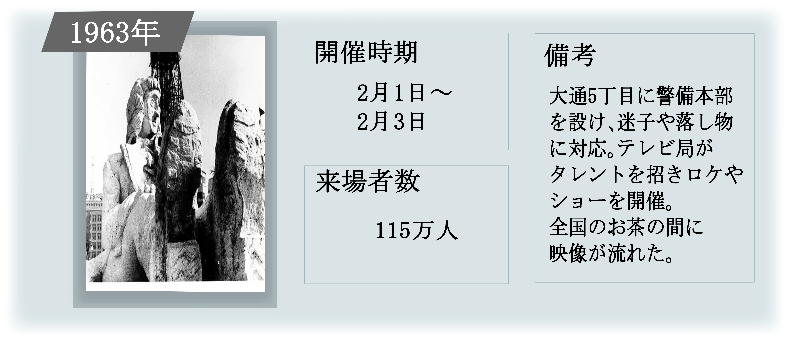 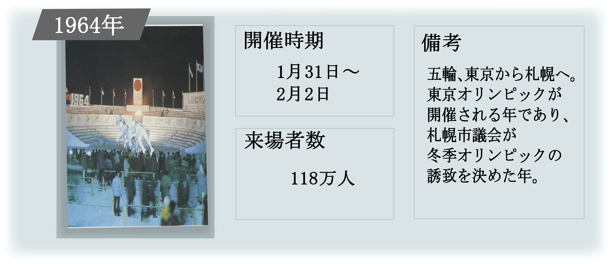